MANUAL TRANSMISSION UNIT > DISASSEMBLY |
| 1. REMOVE TRANSMISSION BREATHER SUB-ASSEMBLY (for 1GR-FE) |
 |
Loosen the hose clamp, and remove the breather hose.
| 2. REMOVE TRANSMISSION BREATHER SUB-ASSEMBLY (for 1VD-FTV) |
 |
Remove the wire harness clamp.
Loosen the hose clamp, and remove the breather hose.
| 3. REMOVE CLUTCH HOUSING |
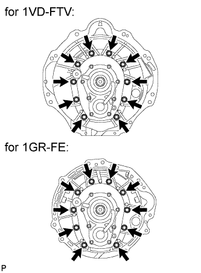 |
Remove the 10 bolts and clutch housing.
| 4. REMOVE FILLER PLUG |
 |
Remove the filler plug.
Remove the gasket from the filler plug.
| 5. REMOVE DRAIN PLUG |
 |
Remove the drain plug.
Remove the gasket from the drain plug.
| 6. REMOVE MANUAL TRANSMISSION CASE PLUG |
 |
Using a T55 "TORX" socket wrench, remove the transmission case plug.
Remove the gasket from the transmission case plug.
| 7. REMOVE BACK-UP LIGHT SWITCH ASSEMBLY |
 |
Disconnect the wire harness clamp.
Using SST, remove the back-up light switch and gasket.
| 8. REMOVE SHIFT POSITION SWITCH (for 1VD-FTV) |
 |
Disconnect the wire harness clamp.
Using SST, remove the shift position switch and gasket.
| 9. REMOVE CONTROL SHAFT COVER |
 |
Remove the 6 bolts and control shaft cover.
| 10. REMOVE REVERSE RESTRICT PIN ASSEMBLY |
 |
Remove the 2 restrict pins.
| 11. REMOVE FLOOR SHIFT CONTROL SHIFT LEVER RETAINER SUB-ASSEMBLY |
 |
Remove the 4 bolts.
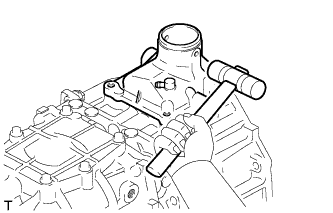 |
Using a plastic-faced hammer, remove the floor shift control shift lever retainer.
| 12. REMOVE NO. 1 REVERSE RESTRICT PIN |
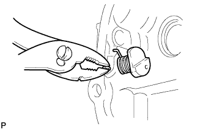 |
Remove the slotted pin.
 |
Remove the No. 1 reverse restrict pin and spring.
| 13. REMOVE TRANSMISSION OIL PUMP COVER |
 |
Remove the 5 bolts and oil pump cover.
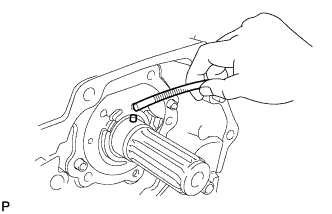 |
Using a magnetic finger, remove the 2 pins.
Remove the oil pump cover O-ring from the oil pump cover.
| 14. REMOVE FRONT BEARING RETAINER (MTM) |
 |
Remove the 8 bolts and front bearing retainer.
| 15. REMOVE SHIFT AND SELECT LEVER SHAFT |
 |
Using a 14 mm hexagon wrench, remove the interlock hole plug.
 |
Remove the 3 bolts, shift and select lever shaft, shift and select lever and shift lever housing.
| 16. REMOVE TRANSFER ADAPTER SUB-ASSEMBLY |
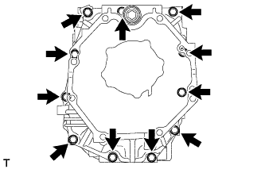 |
Remove the 11 bolts and transfer adapter.
| 17. REMOVE TRANSFER ADAPTER STRAIGHT PIN AND RING PIN |
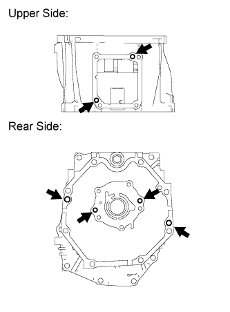 |
Remove the 4 straight pins from the transfer adapter.
Remove the 2 ring pins from the transfer adapter.
| 18. REMOVE TRANSFER ADAPTER PLUG |
 |
Using a T40 "TORX" socket wrench, remove the transfer adapter plug.
| 19. REMOVE MANUAL TRANSMISSION OIL STRAINER SUB-ASSEMBLY |
 |
Remove the 2 bolts and oil strainer.
Remove the O-ring from the oil strainer.
| 20. REMOVE TRANSMISSION MAGNET |
 |
Remove the transmission magnet.
| 21. REMOVE NO. 2 REVERSE IDLER THRUST WASHER |
 |
Remove the thrust washer.
| 22. REMOVE REVERSE IDLER GEAR |
Remove the reverse idler gear.
| 23. REMOVE REVERSE IDLER GEAR BUSH OR BEARING |
Remove the bearing.
| 24. REMOVE REVERSE IDLER THRUST WASHER |
Remove the thrust washer.
| 25. REMOVE REVERSE IDLER GEAR SHAFT |
Remove the reverse idler gear shaft.
| 26. REMOVE REVERSE IDLER GEAR SHAFT WOODRUFF KEY |
Remove the woodruff key from the reverse idler gear shaft.
| 27. REMOVE MANUAL TRANSMISSION CASE SUB-ASSEMBLY |
 |
Using a snap ring expander, remove the 2 snap rings from the input shaft and counter gear.
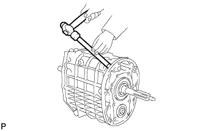 |
Using a brass bar and hammer, carefully tap the transmission case.
Remove the transmission case from the intermediate plate.
| 28. REMOVE NO. 1 OIL RECEIVER PIPE (MTM) |
 |
Remove the 2 bolts and oil receiver pipe from the transmission case.
| 29. REMOVE TRANSFER ADAPTER STRAIGHT PIN |
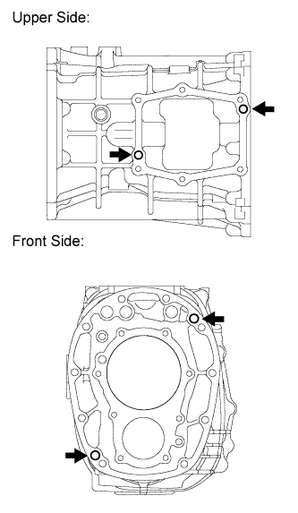 |
Remove the 4 straight pins from the transmission case.
| 30. REMOVE INTERMEDIATE PLATE STRAIGHT PIN |
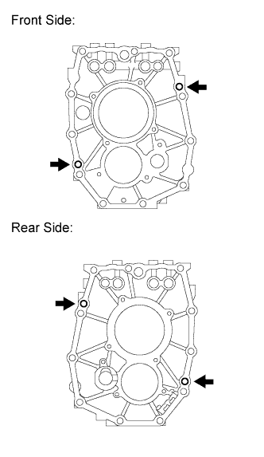 |
Remove the 4 straight pins from the intermediate plate.
| 31. REMOVE MANUAL TRANSMISSION CASE RECEIVER |
 |
Remove the 3 bolts and oil receiver from the intermediate plate.
| 32. REMOVE SHIFT DETENT BALL PLUG |
 |
Using a T40 "TORX" socket wrench, remove the 4 ball plugs.
Using a magnetic finger, remove the 4 springs and 4 balls.
| 33. REMOVE SHIFT FORK SHAFT SNAP RING |
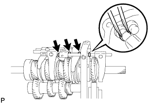 |
Using 2 screwdrivers and a hammer, tap out the 4 snap rings.
| 34. REMOVE NO. 4 GEAR SHIFT FORK SHAFT |
 |
Remove the No. 4 gear shift fork set bolt.
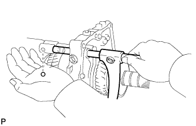 |
Remove the No. 4 gear shift fork shaft and 2 balls.
| 35. REMOVE REVERSE SHIFT FORK |
Remove the reverse shift fork.
| 36. REMOVE NO. 3 GEAR SHIFT FORK SHAFT |
 |
Using a magnetic finger, remove the ball.
 |
Remove the No. 3 gear shift fork set bolt.
Remove the No. 3 shift gear fork shaft and reverse shift head.
 |
Using a magnetic finger, remove the interlock pin from the No. 3 gear shift fork shaft.
| 37. REMOVE NO. 3 GEAR SHIFT FORK |
Remove the No. 3 gear shift fork.
| 38. REMOVE NO. 1 GEAR SHIFT FORK SHAFT |
 |
Using a magnetic finger, remove the interlock pin.
 |
Remove the No. 1 gear shift fork set bolt.
Remove the No. 1 gear shift fork shaft.
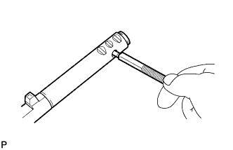 |
Using a magnetic finger, remove the interlock pin from the No. 1 gear shift fork shaft.
| 39. REMOVE NO. 1 GEAR SHIFT FORK |
Remove the No. 1 gear shift fork.
| 40. REMOVE NO. 2 GEAR SHIFT FORK SHAFT |
 |
Using a magnetic finger, remove the interlock pin.
 |
Remove the No. 2 gear shift fork set bolt.
Remove the No. 2 gear shift fork shaft.
| 41. REMOVE NO. 2 GEAR SHIFT FORK |
Remove the No. 2 gear shift fork.
| 42. REMOVE NO. 3 TRANSMISSION CLUTCH HUB SHAFT SNAP RING |
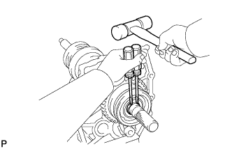 |
Using 2 screwdrivers and a hammer, tap out the snap ring.
| 43. REMOVE NO. 4 TRANSMISSION CLUTCH HUB |
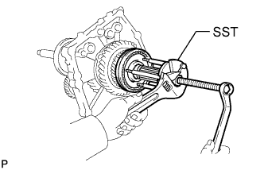 |
Using SST, remove the No. 4 transmission clutch hub.
| 44. REMOVE REVERSE GEAR |
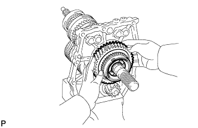 |
Remove the reverse synchronizer ring set and reverse gear.
| 45. REMOVE REVERSE SYNCHRONIZER RING SET |
Remove the reverse synchronizer ring set from the reverse gear.
| 46. REMOVE REVERSE GEAR BEARING |
Remove the reverse gear bearing.
| 47. REMOVE NO. 1 TRANSMISSION HUB SLEEVE |
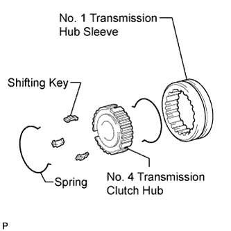 |
Remove the No. 1 transmission hub sleeve, 3 shifting keys, and 2 springs from the No. 4 transmission clutch hub.
| 48. REMOVE OUTPUT SHAFT REAR BEARING (MTM) RETAINER |
 |
Remove the 4 bolts and rear bearing retainer.
| 49. REMOVE COUNTER GEAR |
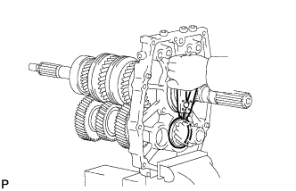 |
Using a snap ring expander, remove the snap ring.
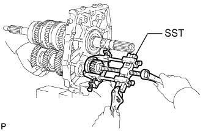 |
Using SST, remove the outer race.
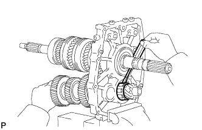 |
Using a screwdriver, remove the center bearing and counter gear.
| 50. REMOVE INPUT SHAFT ASSEMBLY |
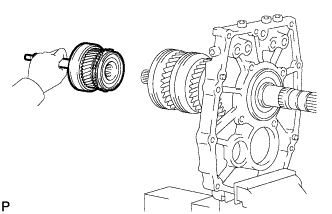 |
Remove the input shaft from the output shaft.
| 51. REMOVE NO. 2 SYNCHRONIZER RING |
Remove the No. 2 synchronizer ring from the input shaft.
| 52. REMOVE OUTPUT SHAFT BEARING SHAFT SNAP RING |
 |
Using a snap ring expander, remove the snap ring.
| 53. REMOVE OUTPUT SHAFT ASSEMBLY |
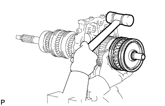 |
Remove the output shaft from the intermediate plate by pulling on the output shaft and tapping on the intermediate plate with a plastic-faced hammer.